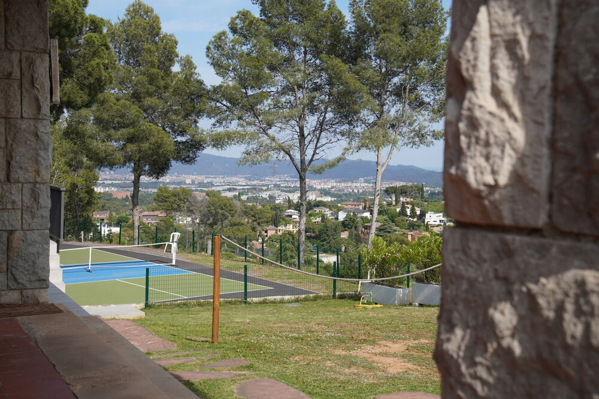
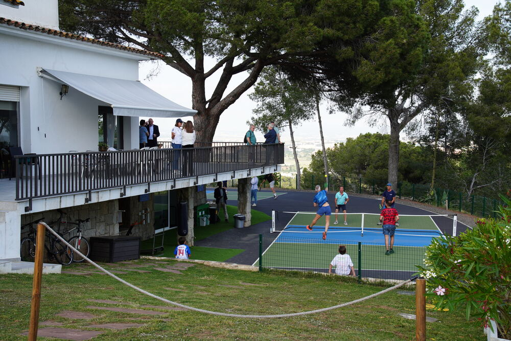
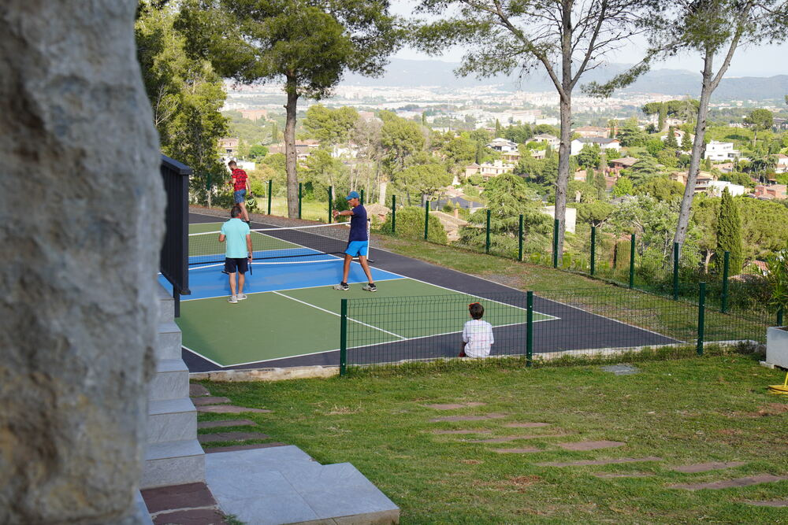
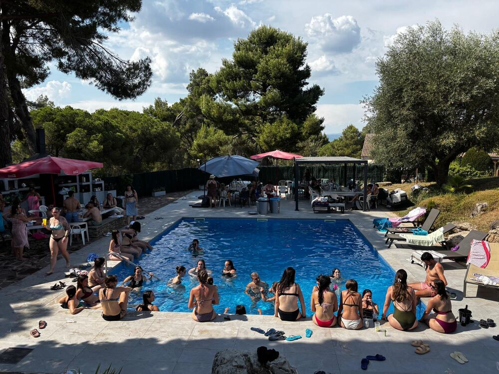

Nuestra visión

Bellaterra Conecta nace con la voluntad de dar un nuevo uso a una finca familiar y convertirla en un espacio donde diferentes personas y organizaciones puedan desarrollar actividades con un objetivo común: conectar experiencias, personas e iniciativas. No queremos limitarnos al alquiler de un espacio. Queremos construir un proyecto donde cada actividad aporte valor por sí misma y, al mismo tiempo, sirva como puerta de entrada al resto del ecosistema Bellaterra Conecta.

La finca donde se desarrolla Bellaterra Conecta fue construida en 1967 y no nació pensando en la sostenibilidad, el turismo o la organización de eventos. Somos la primera generación que ha decidido redefinir su función, aprovechando sus espacios para desarrollar nuevas actividades adaptadas a las necesidades actuales. Nuestro reto no consiste en partir de un proyecto perfecto, sino en demostrar que un espacio puede evolucionar de forma constante cuando existe una visión clara y un compromiso de mejora continua.

Bellaterra Conecta no se define por sus instalaciones, sino por la forma en que se utilizan. La finca es el punto de encuentro donde conviven deporte, empresa, celebraciones, alojamiento y networking. Cada una de estas actividades tiene identidad propia, pero todas forman parte de un mismo proyecto y están pensadas para generar nuevas conexiones entre las personas y nuevas oportunidades de colaboración.

Nuestro objetivo es consolidar Bellaterra Conecta como una plataforma de experiencias donde las personas entren por una necesidad concreta y descubran un ecosistema mucho más amplio. A medio y largo plazo queremos que Bellaterra Conecta sea reconocido no únicamente como un lugar donde suceden actividades, sino como un modelo capaz de integrar comunidad, empresa, bienestar y sostenibilidad dentro de un mismo proyecto.